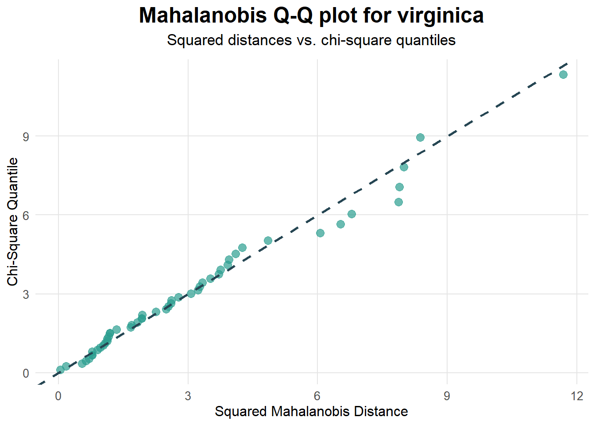

Subset analysis lets you assess multivariate normality separately in each level of a factor. This is useful when data structure or experimental design requires group-wise validation.
Example Data
library(MVN)# Remove the 4th column, keep Species as groupingiris_df <- iris[-4]head(iris_df)
# Henze–Zirkler test by speciessubset_res <-mvn(data = iris_df,subset ="Species",mvn_test ="hz")
2. Viewing Group-Specific Results
Extract multivariate normality for each group:
summary(subset_res, select ="mvn")
── Multivariate Normality Test Results ─────────────────────────────────────────
Group Test Statistic p.value MVN
1 setosa Henze-Zirkler 0.524 0.831 ✓ Normal
2 versicolor Henze-Zirkler 0.714 0.326 ✓ Normal
3 virginica Henze-Zirkler 0.726 0.299 ✓ Normal
All species groups exhibit multivariate normality (p > 0.05). Group-wise analysis ensures that assumptions hold within each category.
3. Group-Wise Diagnostics
You can also generate diagnostic plots for each subset by subset_res object to plot():
# Mahalanobis Q–Q plots for each speciesplot( subset_res,diagnostic ="multivariate",type ="qq")

References
Korkmaz S, Goksuluk D, Zararsiz G. MVN: An R Package for Assessing Multivariate Normality. The R Journal. 2014;6(2):151–162. URL: https://journal.r-project.org/archive/2014-2/korkmaz-goksuluk-zararsiz.pdf